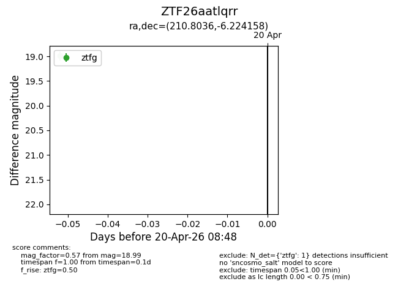
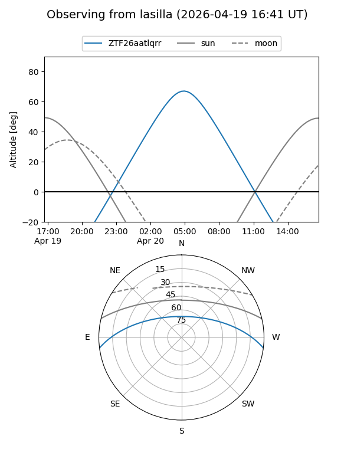
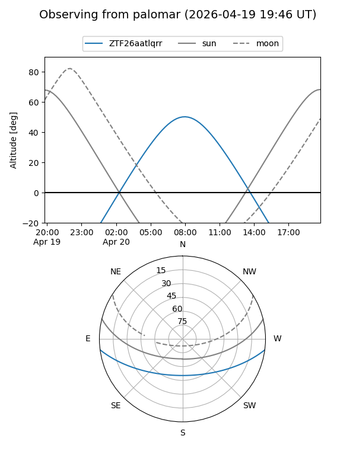

ZTF26aatlqrr
Target ZTF26aatlqrr at 2026-04-20 08:58
Aliases and brokers:
FINK: link
Lasair: link
ALeRCE: link
alt names
ZTF26aatlqrr (ztf,fink_ztf)
Coordinates:
equatorial (ra, dec) = 210.8036,-6.22416
equatorial (HMS+DMS) = 14:03:12.86,-06:13:26.97
galactic (l, b) = (333.0607,+52.39804)
Flags:
Photometry:
last ztfg=18.99
1 ztfg detections
Lightcurve

Visibility


Additional plots